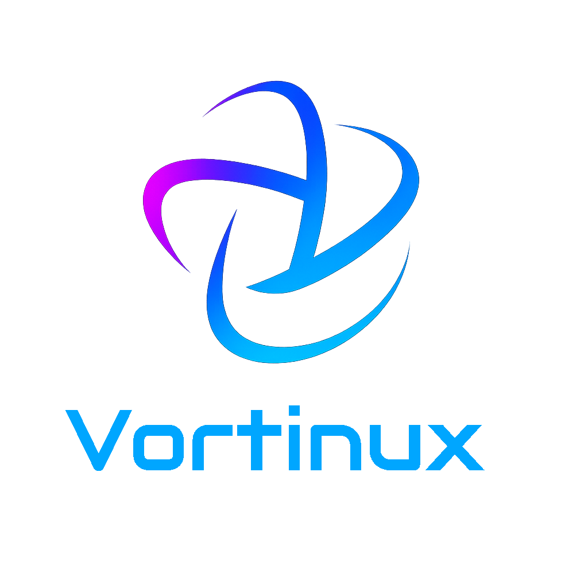

Los primeros 20 creadores que darán forma al futuro de los torneos. Acceso anticipado, beneficios exclusivos y una marca que nace desde las comunidades, no desde una oficina.
Vortinux aparece porque muchos torneos en LATAM siguen dependiendo de hojas de cálculo, chats caóticos y organizadores agotados. Decidimos hacer algo distinto: construir la plataforma junto a quienes ya mueven comunidades reales. Por eso existe Origin: una generación pequeña, seleccionada, que estará en el centro de todo lo que viene.
No queríamos otra herramienta fría. Queríamos algo que naciera desde los creadores.
Antes de escribir una sola línea de código, Vortinux empezó con una pregunta: “¿qué tan difícil es hoy organizar un torneo bien hecho en LATAM?”. La respuesta fue clara: muy difícil.
Procesos manuales, planillas eternas, chats que se pierden, jugadores confundidos, pagos complicados, premios que tardan o nunca llegan. Y en medio de todo, una persona: el creador que hace que todo esto exista.
Vortinux Origin nace para honrar a esa persona. No queremos imponer una plataforma y esperar que funcione. Queremos sentarnos al lado de los creadores, escucharles, construir con ellos y darles herramientas que les ahorren tiempo, les den más estatus y les permitan enfocarse en lo que realmente importa: hacer crecer su comunidad.
Si estás leyendo esto, probablemente ya estés haciendo torneos, aunque nadie te llame “liga”. Para nosotros, tú ya eres el corazón del ecosistema. Origin es la forma de reconocerlo desde el día cero.
Beneficios pensados para creadores que ya están en la trinchera: menos trabajo manual, más visibilidad, más herramientas.
No hay contratos raros ni compromisos imposibles. Queremos creadores activos, sinceros y con ganas de hacer las cosas mejor.
Entra a la encuesta de Vortinux (2–3 minutos). Cuéntanos cómo organizas tus torneos, qué herramientas usas y qué te duele hoy. Este es el filtro principal.
Revisamos las respuestas y seleccionamos a los creadores con comunidades activas, ganas de probar cosas nuevas y disposición para dar feedback honesto.
Los 20 seleccionados reciben su badge, acceso anticipado al MVP, comunicación directa con el equipo y la posibilidad de participar en los primeros torneos oficiales Vortinux.
El badge Origin es más que un icono bonito. Es una forma de mostrar que estuviste cuando la marca apenas estaba tomando forma, cuando todavía había más preguntas que respuestas.